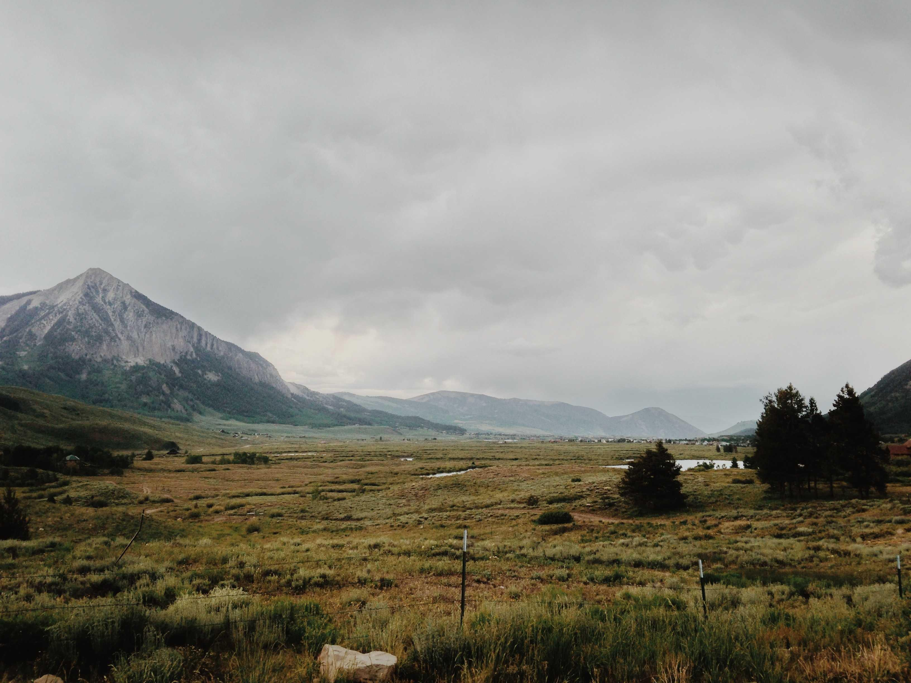

La Comarca: El Hogar de los Hobbits
Publicado por Samwise Gamgee. Fecha: 14 de octubre 2024. Categoría: aventur

La Comarca es uno de los lugares más emblemáticos y queridos de "El Señor de los Anillos". Este idílico territorio es el hogar de los hobbits, una raza pequeña y pacífica que disfruta de una vida sencilla, centrada en la agricultura, la comida y la comunidad. La Comarca se encuentra en el noroeste de la Tierra Media y está caracterizada por sus verdes colinas, campos de cultivo y acogedoras casas subterráneas, conocidas como hobbit-holes.
Características de La Comarca
- Hobbiton: Es la aldea más famosa de la Comarca, donde vive Frodo Bolsón. Aquí se encuentra la icónica casa de Bilbo y Frodo, conocida como La Madriguera. Hobbiton es conocido por sus paisajes pintorescos y su ambiente tranquilo.
- La Tierra de los Hobbits: Este lugar es famoso por sus festividades, como los cumpleaños y las celebraciones de la cosecha. Los hobbits son conocidos por su amor por la comida y la bebida, disfrutando de banquetes y fiestas en comunidad.
- El Bosque de la Comarca: Aunque la Comarca es principalmente rural, también cuenta con áreas boscosas que ofrecen un refugio natural para sus habitantes. Estos bosques son lugares de tranquilidad y belleza, donde los hobbits pueden disfrutar de la naturaleza.
La Comarca en la Historia
La Comarca juega un papel crucial en la historia de "El Señor de los Anillos". Es desde aquí donde Frodo y sus amigos inician su aventura para destruir el Anillo Único. A pesar de su aparente tranquilidad, la Comarca se ve amenazada por la sombra de Sauron y sus fuerzas oscuras. La partida de Frodo hacia el peligro simboliza la lucha entre la paz de la vida hobbit y el caos del mundo exterior.
Legado de La Comarca
La Comarca no solo representa un refugio de paz, sino que también simboliza la resistencia y la valentía de los hobbits. A lo largo de la historia, se demuestra que incluso los más pequeños pueden tener un impacto significativo en el mundo. La Comarca se ha convertido en un símbolo de esperanza y comunidad, resonando con los lectores y espectadores de "El Señor de los Anillos" en todo el mundo.
En resumen, La Comarca es un lugar que encapsula la esencia de la vida hobbit: simple, alegre y profundamente conectada con la naturaleza. Su representación en la obra de Tolkien ha dejado una huella duradera en la cultura popular, convirtiéndola en un lugar querido por todos los fans de la Tierra Media.
Una vista previa del hogar de los Hobbits
Comentarios
Comentarios
Carlos González
10 de Noviembre, 2024
¡Muy buen artículo! Me ayudó a entender mejor el tema.
Ana López
9 de Noviembre, 2024
Excelente, me encantaría leer más sobre este tema. ¡Gracias por compartir!
Otros artículos que pueden interesarte
-

Viajes a la Tierra Media: Explorando los Caminos del Señor de los Anillos
Explora los paisajes emblemáticos de la Tierra Media con "Viajes a la Tierra Media".
-
 Aventuras en la Tierra Media: Un Viaje Inolvidable
Aventuras en la Tierra Media: Un Viaje InolvidableDescubre los rincones más mágicos de la Tierra Media con "Aventuras en la Tierra Media
-
El anillo del destino: ¿Quién será el privilegiado?
Crónica de la lucha entre fuerzas de los hobbits.